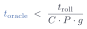

<!-- Slide 39: how far is the far line.  Lesson 1's break-even inequality read
     once with today's numbers, every QPU figure an assumption: five bars on a
     log time axis, then the threshold a coherent call would have to beat.
     See assets/far-line.js. -->
<div class="l2-fig">
<svg id="far-line-fig" viewBox="0 0 760 300" width="980"></svg>
</div>
<div class="slide-equation compact">
  
</div>
<script src="../assets/far-line.js" defer></script>
